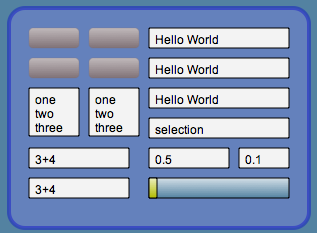
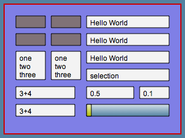
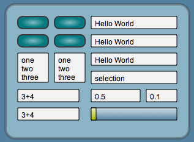

Lively Kernel Tutorial: (9) Display Themes
Back to Introduction
PREVIOUS
Source code of this demo
NEXT
The Lively Kernel system can support different user interface themes.
Themes are collections of style settings that are applied automatically
to all the applicable graphical objects in the system.
You can change the user interface theme by choosing the "choose display theme..."
operation from the popup menu of the world.



Notes:
- Command-click (Alt-click) the background of the display to invoke the popup menu of the world.
Try it yourself! Try changing the display theme by invoking the popup
menu of the world and selecting the "choose display theme..." operation.
While trying out the different themes, also try the various controls (buttons,
fields, sliders, etc.) included in the pane below.